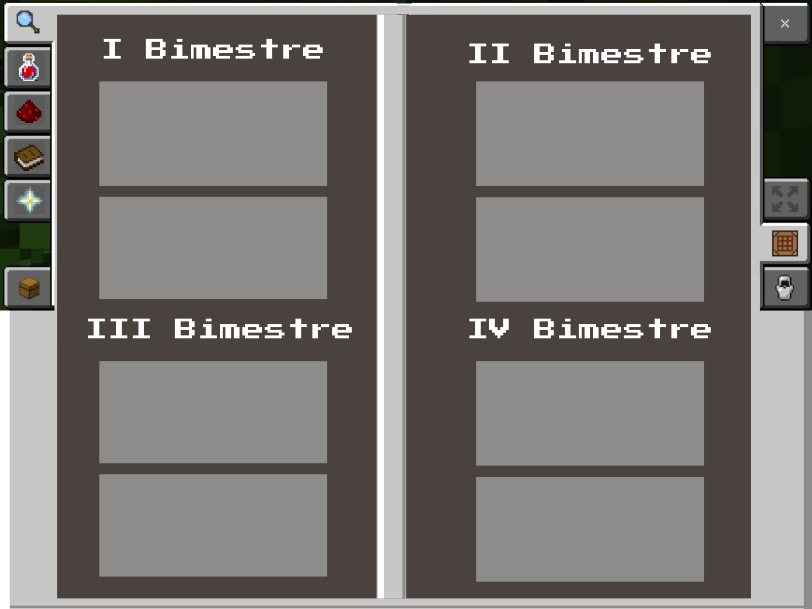
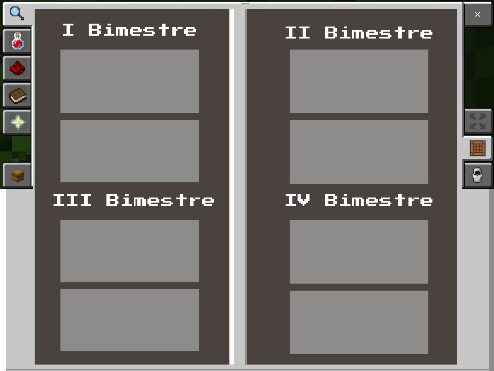

Davi

Eu me chamo Davi, tenho 16 anos e atualmente estudo no 1° ano do Ensino Médio no SESI. No meu tempo livre, costumo estudar, programar, montar cubo mágico ou praticar esportes, como futebol e vôlei.
1º Ano - Overworld
A fase da descoberta. Tudo é novo como um mundo recém-gerado: os primeiros amigos são como vilarejos NPCs que encontramos pelo caminho, as matérias iniciais são como ferramentas básicas de madeira - frágeis, mas essenciais. Aqui se aprende que até mesmo os erros (como tentar minerar diamante com picareta de pedra) fazem parte do processo.
2º Ano - Nether
O momento da intensidade. Assim como no reino infernal do Minecraft, tudo parece mais difícil: a pressão aumenta como a temperatura do Nether, os desafios exigem equipamentos melhores (organização e disciplina), e os recursos são mais escassos (tempo e energia). Mas é justamente aqui que encontramos os materiais mais valiosos para nosso crescimento.
3º Ano - The End
A aparente fase final. Derrotar o Ender Dragon simboliza vencer os últimos obstáculos antes da formatura. Mas assim como no jogo, onde após o The End descobrimos as Cidades do End e os elytras que nos permitem voar, o fim do ensino médio é na verdade um portal para novos começos. A vitória sobre o dragão não é o fim - é a chave que liberta o jogador para explorar mundos muito maiores.
 

- Vale do Indo -
Nesta atividade, fizemos maquetes customizadas de civilizações antigas. Eu e meu grupo fizemos o Vale do Indo.
-Trabalho de Filosofia-
Essa foi uma atividade onde tivemos que desenvolver, em sala, um mapa mental sobre os filósofos pré-socráticos.
- Contratualistas -
Esta foi mas uma atividade sobre os filósofos, mas dessa vez, os Contratualistas.
- Seminário -
Este foi o dia em que toda a sala apresentou o Seminário de História sobre a sociedade feudal.
- Documentos -
Na referida data, apresentamos o trabalho sobre os documetos históricos de Pernambuco.
- Mapa mental -
Nesta aula, o professor pediu para que fizéssemos um mapa mental sobre o trabalho humano.

- Microscópio -
Esse foi o dia em que a professora Paula levou um microscópio para nossa sala.
- Método Científico -
Nesta atividade, fizemos todas as etapas do método científico para aprender como ele funciona na prática
- Célula Animal -
Esse foi um Fanzine sobre a célula animal. Aprendemos suas partes e funções.
- Célula Vegetal -
Este também foi um momento destinado à criação de um fanzine, mas dessa vez foi da célula vegetal.
- Documentos -
Na referida data, apresentamos o trabalho sobre os documetos históricos de Pernambuco.
- Mapa mental -
Nesta aula, o professor pediu para que fizéssemos um mapa mental sobre o trabalho humano.
- Questão OBMEP -
Esse foi o dia que eu e Wellyson resolvemos uma questão da OBMEP no quadro.
- Aula de Função -
Nesta aula, o professor Assis pediu para que os alunos escolhessem um tema para dar uma breve aula sobre.
- Triângulos -
Esse foi um mapa mental sobre os triângulos, suas classificações e principais propriedades.
- Arquitetura -
Neste dia, apresentamos um trabalho sobre a arquitetura e como a geometria está inserida nela.
- Documentos -
Na referida data, apresentamos o trabalho sobre os documetos históricos de Pernambuco.
- Mapa mental -
Nesta aula, o professor pediu para que fizéssemos um mapa mental sobre o trabalho humano.

- Carnaval SESI -
Esse dia foi destinado à confecção dos instrumentos e etandarte para o evento de carnaval do SESI.
- Júri Simulado -
Esta foi uma atividade onde simulados um tribunal sobre a redução da maioridade penal.
- Os Memes -
Esta foi uma atividade onde gravamos um video sobre memes e falamos como eles são uma forma de linguagem.
- Teatro Simples -
Neste dia, apresentamos, por meio de uma breve peça, um livro de Ana maria Gonçalves.
- Andando de Skate -
Nesta aula, o professor ensinou alguns alunos a andar de skate na quadra da escola.
- Mapa mental -
Nesta aula, o professor pediu para que fizéssemos um mapa mental sobre o trabalho humano.
- Carta do Futuro-
Essa foi uma atividade bem confusa, pois precisamos fazer uma carta do 'eu do futuro' para o 'eu do presente'.
- Linha do Tempo -
Nesse dia, fizemos uma linha do tempo sobre a nossa vida, destacando acontecimentos importantes.
- Minha Jornada -
Na referida data, apresentamos uma espécie de 'Sobre Mim', contando sobre inspirações e objetivos.
- Leitura de Livro -
Nessa aula, o professor Wollace leu o lívro 'O Pequeno Príncipe' junto com a sala.
- Ikigai -
Essa foi a atividade Ikigai, onde tivemos que fazer as intersecção entre os pontos em destaque.
- Mapa mental -
Nesta aula, o professor pediu para que fizéssemos um mapa mental sobre o trabalho humano.
- Sem atividade -
Neste bimestre, não tivemos conteúdo.
- Sem atividade -
Neste bimestre, não tivemos conteúdo.
- Sem atividade -
Neste bimestre, não tivemos conteúdo.
- Sem atividade -
Neste bimestre, não tivemos conteúdo.
- Sustentabilidade -
Essa foi nossa primeira atividade cursando o intinerário de automação industrial, onde criamos itens úteis e sustentáveis.
- Mapa mental -
Nesta aula, o professor pediu para que fizéssemos um mapa mental sobre o trabalho humano.
Ciências Humanas
Ciências da Natureza
Matemática
Linguagens
Projeto de Vida
SENAI